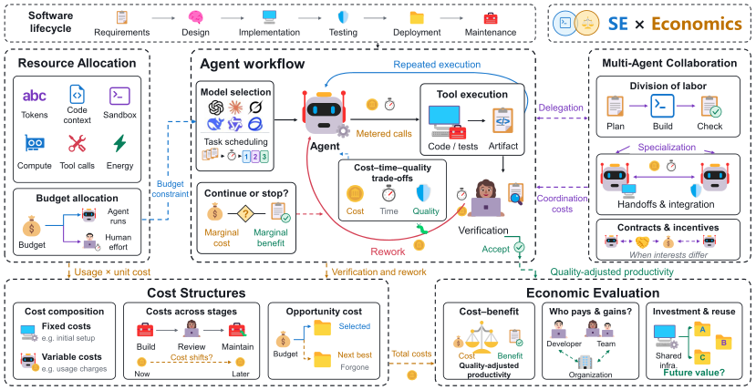

The 1st International Workshop on Agent Economics in Software Engineering
(AESE 2027)
Proposed for FSE'27
Workshop date and location: TBD
About
Welcome to the 1st International Workshop on Agent Economics in Software Engineering (AESE)! The workshop aims to bring together researchers and practitioners from software engineering, artificial intelligence, and economics to understand, evaluate, and improve the economics of AI agents throughout the software development lifecycle.
AI agents powered by large language models increasingly undertake software engineering tasks, from requirements analysis and design to implementation, testing, and maintenance. Their autonomous planning, tool use, and iterative refinement introduce resource consumption and operational costs that can vary considerably across tasks and execution paths. Understanding and managing these costs is essential to realizing the economic benefits of agent-driven automation and supporting its adoption at scale.

View full-size figure · View original PDF
Beyond cost management, agentic software engineering raises broader questions about efficient resource allocation, economically effective collaboration, and the overall value of automation. Multi-agent systems must balance the benefits of specialization against communication, delegation, and coordination costs. Economic evaluation must also account for software quality, developer productivity, verification, rework, and long-term maintenance.
By connecting empirical findings, engineering challenges, and economic perspectives, AESE seeks to inspire new economic models, engineering techniques, and evaluation frameworks. The workshop aims to:
- Facilitate knowledge exchange by sharing novel ideas, empirical results, engineering techniques, and lessons learned about the economics of agentic software engineering.
- Identify open challenges and research opportunities in characterizing, managing, and evaluating agent costs and economic value.
- Advance economic-aware methods and evaluation through cost models, resource management techniques, collaboration mechanisms, and evaluation methodologies.
- Encourage interdisciplinary collaboration among software engineering, AI, and economics researchers and industry practitioners.
Status: AESE 2027 is a proposed workshop for FSE 2027. Co-location, dates, and proceedings arrangements will be confirmed following workshop acceptance.
🗓️ Program
Proposed format: half-day workshop. The detailed program, speakers, and session times are TBD.
The workshop will be open to all, with an expected attendance of 20–50 participants from academia and industry. Paper presentations will be selected through peer review.
📢 Call for Papers
We invite contributions on the following topics, including but not limited to:
- Agent Resource Consumption and Cost Modeling
- Token usage analysis, cost characterization, estimation, and prediction
- Detection and diagnosis of abnormal resource consumption, such as token bugs
- Cost modeling for inference, tool use, verification, and human oversight
- Economic-informed Agent Decision-Making and Resource Allocation
- Budget-aware reasoning, planning, and tool use
- Dynamic allocation of computational resources across software engineering tasks
- Cost–benefit and marginal-utility-aware agent decision-making
- Adaptive model selection, task scheduling, and optimal stopping
- Economics of Multi-Agent Collaboration
- Cost-aware task decomposition, delegation, and division of labor
- Incentive mechanisms and resource sharing in collaborative agent systems
- Economic efficiency and impact of human–agent and agent–agent collaboration
- Economic Value and Productivity in Agentic Software Engineering
- Economic evaluation of AI agents across the software development lifecycle
- Quality-adjusted productivity, cost-effectiveness, and return on investment
- Trade-offs among development cost, software quality, and maintenance effort
- Economic Implications of Agent Reliability, Security, and Governance
- Economic consequences of agent failures and software defects
- Resource abuse, cost amplification, and economic security of agents
- Sustainable and accountable resource consumption in agentic workflows
- Empirical Studies, Benchmarks, and Industrial Experiences
- Empirical studies of cost and resource consumption in real-world agentic software engineering
- Benchmarks and metrics for economic evaluation of software engineering agents
- Industrial experiences with agent cost management and value assessment
- Comparative studies of agent architectures, workflows, and collaboration strategies
Submission Guidelines:
We plan to welcome the following two types of submissions:
- Extended Abstracts (1–4 pages including references): Well-argued positions, preliminary findings, or work in progress. These contributions are exempt from article processing charges (APCs).
- Research Papers (5–8 pages including references): Technical research, experience reports, empirical studies, benchmarks, etc.
Requirements:
- Originality: Submissions must be original and not under review elsewhere.
- Eligibility: Organizers and their directly supervised students, postdocs, and employees may not submit papers to the workshop.
- Submission Format: Papers should be written in English and submitted in PDF format. Final formatting and anonymization requirements will be announced with the official call for papers.
- Submission Site: HotCRP will be used to manage submissions and reviews. The submission link is TBD.
- Proceedings: Publication in the ACM Digital Library is planned, subject to workshop acceptance and conference arrangements. At least one author of each accepted paper must register for the workshop.
Review Process:
- Submissions will be peer-reviewed by at least three members of the program committee.
- Evaluation criteria include originality, relevance, technical soundness, and clarity of presentation.
Tentative Important Dates (2027, Anywhere on Earth / AoE):
- Paper Submission Deadline: February 11, 2027
- Notification of Acceptance: March 18, 2027
- Camera-Ready Papers Due: April 8, 2027
- Workshop Date: TBD
👥 Organization
Organizing Committee
|
|
|
|
|
👩💻👨💻 Program Committee
We expect to invite 10–15 program committee members. The following list is tentative, subject to confirmation:
🌐 Stay Connected
- Main Contact: Liu Wang, Huazhong University of Science and Technology
- Email: liuwang@hust.edu.cn
- Social Media: TBD